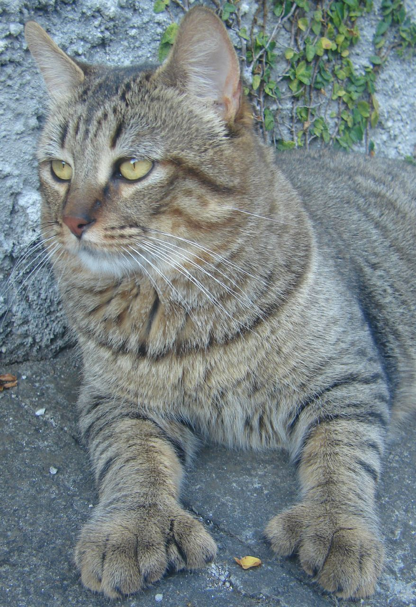

The Pixie-bob is a breed of domestic cat claimed by breed founder Carol Ann Brewer of Washington State to be the progeny of naturally occurring bobcat hybrids. DNA testing has failed to detect bobcat marker genes[1] and Pixie-bobs are considered wholly domestic for the purposes of ownership, cat fancy registration, import and export.
Pixie-bobs are a fully domestic breed of cat bred to resemble the North American Bobcat. For a cat to be considered a certified TICA Pixie-bob cat, one of their parents must be traced back to StoneIsland Pixie, the original inspiration for the breed.
Pixie-bobs can be large but on average reach around 11 lb (5 kg), similar to good sized domestic cats, with only very few breeders producing consistently large cats. Males are usually larger than females. The average domestic cat weighs about 8 lb (4 kg).[4] Pixie-bobs grow for 4 years instead of 1 year like most domestic cats.[citation needed]
Most Pixie-bobs have black fur and skin on the bottom of their paws, tipped ears, heavy ear hair, black lips, and white fur around the eyes but with black eye skin. Their chins have white fur, but often have black skin under the white fur. Some of their whiskers change from black (root - about 25%) to white (to the tip - about 75% of the whisker). Bobcat-like fur pattern, but often have reddish tones mixed in. Most are short-haired, but some are long-haired. The brow should be heavy and the eyes should have a triangular shape. Eyes are blue when kittens, then change to green or gold when several months old. Tails can be non-existent (rumpy), or 2-4 inches (5–10 cm) (desired - TICA required), or long tails (StoneIsland Pixie was a long-tail). The head is pear shaped. The head is considered to be the most important characteristic.
It is not presently known what genetic similarity there may or may not be between the Pixie-bob and other breeds with suppression of the tail, such as the Manx, American Bobtail, and Japanese Bobtail.
References:
This article uses material from the Wikipedia article ”LaPerm", which is released under the Creative Commons Attribution-Share-Alike License 3.0
Picture: By Simone Johnsson from Curitiba, Brazil (Pantanal) [CC BY-SA 2.0], via Wikimedia Commons